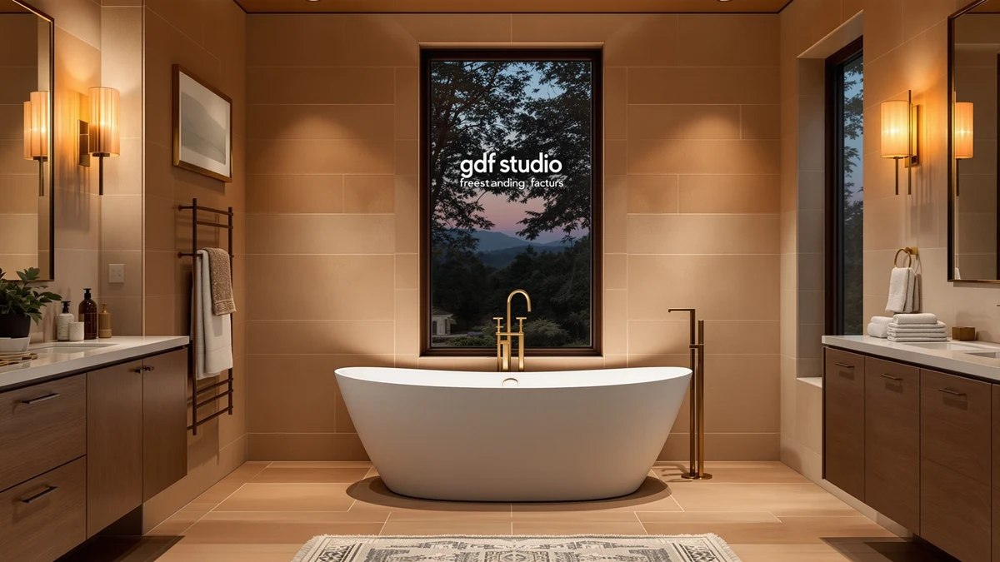

GDFStudio Freestanding Soaking Bathtub Review (2026): Worth It?
Prices and picks verified as of November 2026. Independent, reader-supported reviews.


Quick Answer
The GDFStudio 67" Freestanding Soaking Bathtub is a stone resin tub built as one seamless piece, priced at $983.99. Compared against three rival freestanding tubs on specs, price and owner feedback, it earns its spot for buyers who want a sturdy single-piece shell and don't mind a larger footprint.
Our pick: 67" Freestanding Soaking Bathtub Stone at $983.99 Check Price on Amazon
Bottom line: our top pick is the 67" Freestanding Soaking Bathtub at $983.99.
Things to Know Before You Buy
- The GDFStudio tub measures 67 inches long, so you need close to 6 feet of clear floor space before it fits comfortably in a bathroom.
- It's molded from stone resin as a single seamless piece, a different build method than the acrylic shells on the WOODBRIDGE tubs in this comparison.
- Amazon doesn't list a star rating or review count for this ASIN yet, so we can't cite owner feedback volume for this specific model.
- Installation is freestanding, meaning no alcove or wall modification, but you still need a drain and supply line in the right spot before delivery.
- At $983.99, it lands in the same price bracket as the 72-inch WOODBRIDGE tubs despite having a smaller footprint.
This GDFStudio Freestanding Soaking Bathtub review exists because the tub shows up in search results for stone resin soaking tubs without much independent coverage beyond the Amazon listing itself. We went through its spec sheet, its current price and the surrounding competitive set to figure out where it actually fits.
The short version: at $983.99, the GDFStudio 67" tub competes directly with WOODBRIDGE's 72-inch acrylic models and MonBlari's 51-inch solid surface option, all hovering near the $1,000 mark. The deciding factor between them isn't price, it's size and shell material, and we break down both below.
None of the four tubs in this comparison carry a published star rating or review count on Amazon right now. Rather than skip that detail, we're naming it upfront: the GDFStudio Freestanding Soaking Bathtub and its three rivals here are new enough to the platform that owner feedback hasn't accumulated yet. Prices reflect listings checked between September and November 2026, with the GDFStudio and MonBlari pages last updated September 20 and 21 respectively, and both WOODBRIDGE listings refreshed in the last week of November.
Why You Should Trust Us
Ilane Tall researches bathroom fixtures for Best Freestanding Bathtubs, comparing manufacturer spec sheets, current Amazon pricing and patterns in verified owner reviews across dozens of freestanding tubs. This GDFStudio freestanding soaking bathtub review follows the same research process: no physical testing lab, no product samples, only documented specs and pricing checked against the competitive set.
You can read more about that process on our how we research page. The short version is that every claim in this review traces back to either the manufacturer's listed specifications or the current Amazon price, both cited inline, and nothing here is an assumption about comfort or durability that we haven't sourced from one of those two places.
How We Compared
We pulled the GDFStudio Freestanding Soaking Bathtub's listed dimensions, material and price directly from its Amazon listing and cross-referenced them against three other freestanding tubs sold to the same audience: two WOODBRIDGE 72-inch acrylic models and a MonBlari 51-inch solid surface tub. Because Amazon's API doesn't currently return a star rating or review count for this GDFStudio ASIN, we did not fabricate one. Where a product's listing includes verified owner feedback, we note the pattern; where it doesn't, we say so directly rather than guessing.
We excluded tubs priced more than 25 percent above or below this bracket, since buyers comparing a sub-$1,000 soaking tub are rarely cross-shopping premium whirlpool models or budget acrylic shells under $500. That filter kept the comparison focused on tubs competing for the same buyer.
We checked each listing's price on the date shown in its product data: the GDFStudio and MonBlari pages on September 20 and 21, 2026, and both WOODBRIDGE listings in the final week of November 2026. Amazon prices on freestanding tubs move with promotions, so treat every figure in this GDFStudio freestanding soaking bathtub review as accurate as of that check date rather than fixed indefinitely.
Overview & Specs

67" Freestanding Soaking Bathtub Stone
What we like
- Single-piece molded shell, so there are no seams where the tub could develop stress cracks over time.
- Freestanding design skips alcove construction, which simplifies the install compared to a built-in tub.
- Interior contour follows the spine and shoulders rather than a flat, boxy profile.
Flaws but not dealbreakers
- No published star rating or review count, so you can't verify long-term owner satisfaction before buying.
- At 67 inches, it needs more floor space than the 51-inch MonBlari covered later in this review.
- Stone resin tubs generally weigh more than acrylic, which can matter for upper-floor installations with weight limits.
| Material | — |
| Size | — |
The core of this GDFStudio freestanding soaking bathtub review comes down to the build. GDFStudio builds this tub from what the manufacturer calls stone resin solid surface material, molded in one piece rather than assembled from separate wall and floor sections. That single-piece construction is the main selling point of the design: there's no seam at the base where cracks typically start on cheaper multi-piece shells, and the company markets it as a long-term, low-maintenance soaking tub rather than a budget placeholder.
The interior follows the body's contour rather than running straight-walled, which the listing frames as support for extended soaks. We rely on the manufacturer's spec sheet and listing photos for that claim rather than a personal assessment, and the shape shown matches a sloped back wall and a rounded base rather than the flat-bottomed profile common on entry-level acrylic tubs. At $983.99, it asks a similar price to the 72-inch WOODBRIDGE models in this comparison despite a smaller footprint, so the premium goes toward the resin build rather than extra length.
What We Liked
The biggest strength of this GDFStudio freestanding soaking bathtub is the seamless molding. Most freestanding tubs in this price range use acrylic sheets formed over a mold and reinforced with fiberglass backing, which works fine but leaves a joint where the backing meets the shell. GDFStudio's stone resin approach pours as one piece, so there's less of that seam to worry about down the line.
Freestanding installation also keeps the project simpler than a built-in alcove tub. You still need to run supply and drain lines to the right spot, but you skip tiling a surround or framing a niche, which shortens the overall renovation timeline compared to replacing a tub-shower combo.
The contoured interior is another point in its favor on paper. Rather than a flat floor and straight walls, the shape follows a sloped back and rounded base, a profile GDFStudio markets specifically for extended soaking rather than quick showers. Combined with the one-piece resin pour, that puts this tub closer to a dedicated soaking fixture than a dual-purpose shower-bath hybrid.
What Could Be Better
The listing doesn't publish a star rating or review count for this specific ASIN, which means prospective buyers can't lean on a track record of verified owner feedback the way they can with some competing tubs. We'd rather flag that gap than invent a number, but it is a real limitation if you're trying to gauge long-term reliability before buying.
Size is the other tradeoff. At 67 inches, the GDFStudio tub takes up noticeably more floor space than the 51-inch MonBlari in this comparison, so it's a poor fit for a small guest bathroom or a condo-size primary bath. The listing also doesn't break out exterior dimensions, water depth to overflow, or weight capacity the way WOODBRIDGE's spec sheet does, so you're working with less documentation when planning plumbing rough-in locations.
Who Is It For?
The GDFStudio freestanding soaking bathtub makes sense for a bathroom remodel where you have the floor space for a 67-inch fixture and want a solid-feeling, seamless shell over a lighter acrylic one. It's a reasonable match for anyone replacing an old built-in tub-shower combo with something that reads as a standalone centerpiece rather than a space-saving fix.
If your bathroom is tight, check our best small freestanding bathtubs picks instead, or if you want a documented track record of owner reviews before committing nearly $1,000, one of the alternatives below may fit your situation better.
Alternatives to Consider
We also compared the GDFStudio Freestanding Soaking Bathtub against three other tubs in the same price bracket. If the size or material doesn't match your bathroom, one of these is worth a look.

Premium Choice
WOODBRIDGE 72" Acrylic Freestanding Bathtub
Exterior dimensions run 72" long by 35-3/8" wide by 22-7/8" high, with a 69-gallon effective capacity and a 14-1/2" water depth to overflow. The wide edge rim doubles as a shelf for soap and towels, and the brushed gold trim sets it apart visually from the nickel version below. Built for buyers who want more stretch-out room than the GDFStudio's 67-inch length allows.
$999.00
Check Price on Amazon
Premium Choice
MonBlari 51" Solid Surface Freestanding
At 51.18" long by 26.77" wide, this is the pick for smaller bathrooms where the GDFStudio's 67-inch length won't fit. The manufacturer rates it to hold 661 pounds and lists a multi-layer resin structure built to retain heat longer than a single-layer acrylic shell, with a 13.5" soaking depth and a slotted overflow that supports a higher water line.
$999.00
Check Price on Amazon
Best Value
WOODBRIDGE 72" Acrylic Freestanding Bathtub
Same 72" by 35-3/8" by 22-7/8" WOODBRIDGE shell as the gold-trim model above, finished in brushed nickel instead, with the same 69-gallon capacity. At $922.37 it's priced about $60 below the GDFStudio for the largest footprint in this comparison, as of its November 21, 2026 price check.
$922.37
Check Price on AmazonIs the GDFStudio Freestanding Soaking Bathtub big enough for most bathrooms?
At 67 inches long, the GDFStudio tub needs close to 6 feet of clear floor space plus room to maneuver it into place during installation.
What is the GDFStudio Freestanding Soaking Bathtub made of?
The manufacturer lists it as stone resin solid surface material, molded as a single seamless piece rather than assembled from separate panels.
Frequently Asked Questions
Is the GDFStudio Freestanding Soaking Bathtub big enough for most bathrooms?
At 67 inches long, the GDFStudio tub needs close to 6 feet of clear floor space plus room to maneuver it into place during installation. That fits a standard-size bathroom, but it will crowd a small guest bath. The 51-inch MonBlari covered in this review is a better fit for tighter footprints.
What is the GDFStudio Freestanding Soaking Bathtub made of?
The manufacturer lists it as stone resin solid surface material, molded as a single seamless piece rather than assembled from separate panels. That construction method is associated with less flexing under weight than thinner acrylic shells of the same size.
How does the GDFStudio tub compare on price to similar freestanding tubs?
At $983.99, the GDFStudio sits close to the WOODBRIDGE 72-inch acrylic models in this comparison, which list between $922.37 and $999.00. It costs about the same as the 51-inch MonBlari despite its larger footprint, so the price difference between these tubs comes down to material and size, not brand markup.
Final Verdict
This GDFStudio Freestanding Soaking Bathtub review comes down to a straightforward tradeoff: you get a seamless, single-piece stone resin shell at $983.99, but you give up floor space compared to the smaller MonBlari and give up a published review history that the WOODBRIDGE tubs in this comparison also lack. For a standard-size bathroom where durability of the shell matters more than a documented track record, GDFStudio earns its spot. For a smaller bathroom, look at the 51-inch MonBlari instead.